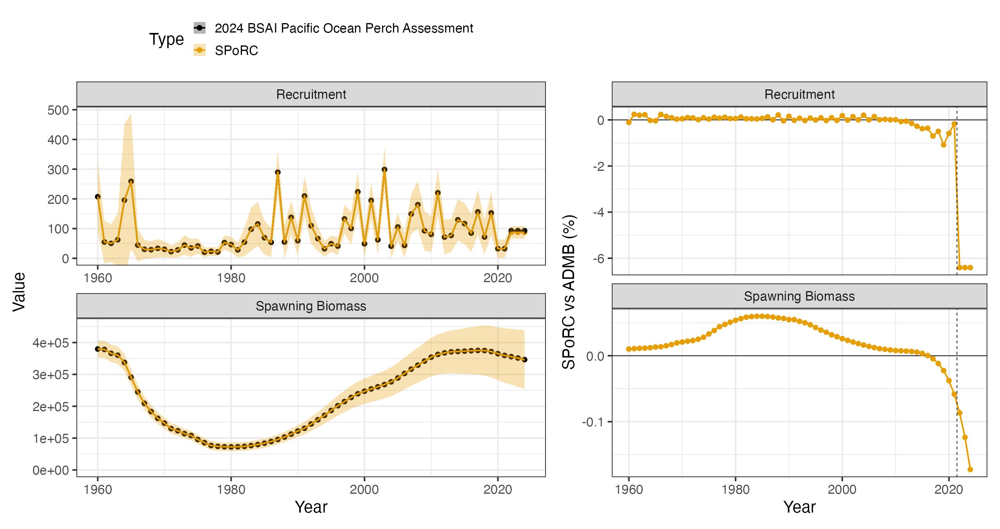
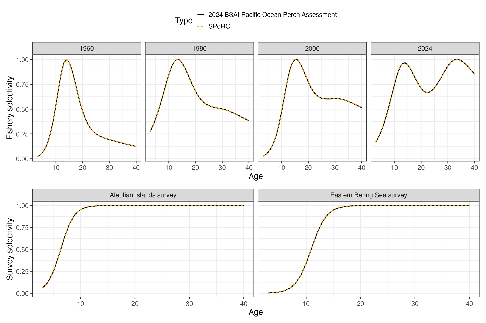

Case Study: Bering Sea and Aleutian Islands Pacific Ocean Perch
aa_bsai_pacific_ocean_perch_case_study.RmdOverview
This case study reproduces the 2024 Bering Sea and Aleutian Islands
Pacific ocean perch assessment in SPoRC. Every structural
choice below follows the assessment rather than SPoRC’s
defaults. It is the most structurally involved of the five rockfish case
studies: two survey fleets, a first year equilibrium under a fixed
historical fishing mortality, and a bicubic spline fishery selectivity
surface over year and age.
| Source | Years | Observations | Likelihood |
|---|---|---|---|
| Catch | 1960–2024 | 65 | Lognormal, weighted |
| Aleutian Islands survey biomass | 1991–2024 | 14 | Lognormal |
| Eastern Bering Sea slope survey biomass | 2002–2016 | 6 | Lognormal |
| Fishery age compositions | 1981–2023 | 22 | Multinomial |
| Fishery length compositions | 1964–2022 | 32 | Multinomial |
| Aleutian Islands survey age compositions | 1991–2022 | 13 | Multinomial |
| Eastern Bering Sea survey age compositions | 2002–2016 | 6 | Multinomial |
| Aleutian Islands survey length compositions | 2024 | 1 | Multinomial |
Model ages run 3 to 46 with a plus group, while the assessment reports over observed ages 3 to 40 with its last column an age 40 plus aggregation. Lengths run 15 to 39 cm.
Model dimensions
Because the model is single region and single sex, the population, region, season and sex subscripts used in the model equations all collapse to one, and are dropped from the notation below.
input_list <- Setup_Mod_Dim(
n_pop = dat$n_pop,
years = yrs,
ages = dat$ages,
lens = dat$lens,
n_regions = dat$n_regions,
n_sexes = dat$n_sexes,
n_fish_fleets = dat$n_fish_fleets,
n_srv_fleets = dat$n_srv_fleets,
n_seas = dat$n_seas,
verbose = FALSE
)Recruitment and the initial age structure
Recruitment is a mean with annual deviations rather than a stock recruit function, and the last three years take the mean outright.
The first year sits in equilibrium under a fixed historical fishing
mortality of
,
which the assessment holds independent of the estimated mean
.
init_F_form = "abs" is what keeps the two separate. Under
the alternative "prop" form the initial
would be a multiple of
,
so raising the estimated mean would deplete the initial age structure,
which is not what the assessment does.
bias_year is indexed in deviation space rather than in
calendar years, so c(1, 1, n_yrs + 1, n_yrs + 1) puts the
whole series in the fully bias corrected limb of the ramp. That centres
the recruitment penalty on
,
which is what the shifted deviations in the seeding section below
require.
init_F_par <- array(log(1e-10), dim = c(dat$n_regions, dat$n_seas, dat$n_fish_fleets))
init_F_par[1, 1, 1] <- log(dat$mle$historic_F)
input_list <- Setup_Mod_Rec(
input_list = input_list,
rec_model = "mean_rec",
do_rec_bias_ramp = 1,
bias_year = c(1, 1, n_yrs + 1, n_yrs + 1),
sigmaR_switch = 1,
ln_sigmaR = array(log(c(dat$sigmaR, dat$sigmaR)), dim = c(2, dat$n_pop, dat$n_regions)),
dont_est_recdev_last = dat$fixedrec,
equil_init_age_strc = "equil",
sigmaR_spec = "fix",
init_age_strc = 1,
init_F_form = "abs",
init_F_spec = "fix",
init_F_par = init_F_par,
t_spawn = (dat$spawn_mo - 1) / 12,
use_rinit = 1
)Biological dynamics
Natural mortality is estimated under a lognormal prior. The
assessment states its prior as a mean of
on the natural scale, so the median supplied to SPoRC is
shifted by
to put the prior mean where the assessment puts it.
Maturity is estimated inside the assessment’s template and is absent from its report object, so the fitted logistic is rebuilt when the data object is constructed and held fixed here. That is why the assessment’s maturity likelihood is removed from its side of the objective in the crosswalk below.
input_list <- Setup_Mod_Biologicals(
input_list = input_list,
WAA = dat$WAA,
MatAA = dat$MatAA,
fit_lengths = 1,
SizeAgeTrans = dat$SizeAgeTrans,
AgeingError = dat$AgeingError,
M_spec = "est_ln_M",
Use_M_prior = 1,
M_prior = data.frame(popblk = 1, regionblk = 1, yearblk = 1, ageblk = 1, sexblk = 1,
mu = dat$mean_M * exp(-dat$cv_M^2 / 2), sd = dat$cv_M),
addtosrvidx = 1e-13,
addtocomp = 1e-13
)Movement and tagging
The model is single region, so movement is an identity matrix and no tagging data are used. Both still have to be declared.
input_list <- Setup_Mod_Movement(input_list = input_list, use_fixed_movement = 1,
Fixed_Movement = NA, do_recruits_move = 0)
input_list <- Setup_Mod_Tagging(input_list = input_list, use_conv_fish_tagging = 0)Catch and fishing mortality
The assessment writes its catch and F statements as weighted sums of squares with weights and . A weighted sum of squares and a normal likelihood with a fixed standard deviation are the same statement up to a constant, related by , so both weights are carried inside the standard deviations rather than applied outside the sums.
suppressWarnings(
input_list <- Setup_Mod_Catch_and_F(
input_list = input_list,
ObsCatch = dat$ObsCatch,
UseCatch = dat$UseCatch,
Use_F_pen = 1,
sigmaC_spec = "fix",
ln_sigmaC = array(log(sqrt(1 / (2 * dat$catch_wt))),
dim = c(dat$n_regions, n_yrs, dat$n_seas, dat$n_fish_fleets)),
ln_sigmaF = array(log(sqrt(1 / (2 * dat$fmort_wt))),
dim = c(dat$n_regions, dat$n_seas, dat$n_fish_fleets))
)
)Fishery compositions
There is no fishery index in this assessment, only compositions, so
fish_idx_type is "none" and the index arrays
are declared empty.
input_list <- Setup_Mod_FishIdx_and_Comps(
input_list = input_list,
ObsFishIdx = array(NA, dim = c(dat$n_regions, n_yrs, dat$n_seas, dat$n_fish_fleets)),
ObsFishIdx_SE = array(NA, dim = c(dat$n_regions, n_yrs, dat$n_seas, dat$n_fish_fleets)),
UseFishIdx = array(0, dim = c(dat$n_regions, n_yrs, dat$n_seas, dat$n_fish_fleets)),
ObsFishAgeComps = dat$ObsFishAgeComps,
UseFishAgeComps = dat$UseFishAgeComps,
ISS_FishAgeComps = dat$ISS_FishAgeComps,
ObsFishLenComps = dat$ObsFishLenComps,
UseFishLenComps = dat$UseFishLenComps,
ISS_FishLenComps = dat$ISS_FishLenComps,
fish_idx_type = "none",
FishAgeComps_LikeType = "Multinomial",
FishLenComps_LikeType = "Multinomial",
FishAgeComps_Type = "agg_Year_1-terminal_Fleet_1",
FishLenComps_Type = "agg_Year_1-terminal_Fleet_1"
)Survey indices and compositions
Two survey fleets are declared, the Aleutian Islands bottom trawl survey and the eastern Bering Sea slope survey, both fit to biomass and both lognormal. Every argument is a vector over the two fleets.
input_list <- Setup_Mod_SrvIdx_and_Comps(
input_list = input_list,
ObsSrvIdx = dat$ObsSrvIdx,
ObsSrvIdx_SE = dat$ObsSrvIdx_SE,
UseSrvIdx = dat$UseSrvIdx,
ObsSrvAgeComps = dat$ObsSrvAgeComps,
ISS_SrvAgeComps = dat$ISS_SrvAgeComps,
UseSrvAgeComps = dat$UseSrvAgeComps,
ObsSrvLenComps = dat$ObsSrvLenComps,
UseSrvLenComps = dat$UseSrvLenComps,
ISS_SrvLenComps = dat$ISS_SrvLenComps,
srv_idx_type = rep("biom", dat$n_srv_fleets),
SrvAgeComps_LikeType = rep("Multinomial", dat$n_srv_fleets),
SrvLenComps_LikeType = rep("Multinomial", dat$n_srv_fleets),
SrvAgeComps_Type = paste0("agg_Year_1-terminal_Fleet_", 1:dat$n_srv_fleets),
SrvLenComps_Type = paste0("agg_Year_1-terminal_Fleet_", 1:dat$n_srv_fleets)
)Fishery selectivity and catchability
Fishery selectivity is a bicubic spline over a five year by five age node grid, exponentiated with no normalisation:
where is the matrix of node values and the two matrices are the spline bases over years and over ages.
SelStyr and NSelBins in the specification
string are not cosmetic. They set the year range and the bin count that
the smoothness penalties normalise by, and they impose the assessment’s
two edge holds: selectivity is flat before 1964 and flat beyond age 40.
Getting either wrong changes both the surface and the penalty.
fish_sel_spec <- paste0("bicubic_Bin_", dat$fsh_age_nodes,
"_Yr_", dat$fsh_yr_nodes,
"_Fleet_1",
"_SelStyr_", dat$fsh_sel_styr,
"_NSelBins_", dat$nselages)
input_list <- Setup_Mod_Fishsel_and_Q(
input_list = input_list,
cont_tv_fish_sel = "none_Fleet_1",
fish_sel_blocks = "none_Fleet_1",
fish_sel_model = fish_sel_spec,
fish_q_blocks = "none_Fleet_1",
fish_fixed_sel_pars_spec = "est_all",
fish_q_spec = "fix",
use_fixed_fish_sel = 0
)Survey selectivity and catchability
Survey selectivity is logistic in both fleets, using the slope and parameterisation:
Only the Aleutian Islands survey carries a catchability prior.
Supplying a single row for fleet 1 in srv_q_prior is what
restricts it to that fleet; the eastern Bering Sea catchability is
estimated freely.
input_list <- Setup_Mod_Srvsel_and_Q(
input_list = input_list,
cont_tv_srv_sel = paste0("none_Fleet_", 1:dat$n_srv_fleets),
srv_sel_blocks = paste0("none_Fleet_", 1:dat$n_srv_fleets),
srv_sel_model = paste0("logist1_Fleet_", 1:dat$n_srv_fleets),
srv_q_blocks = paste0("none_Fleet_", 1:dat$n_srv_fleets),
srv_fixed_sel_pars_spec = rep("est_all", dat$n_srv_fleets),
srv_q_spec = rep("est_all", dat$n_srv_fleets),
Use_srv_q_prior = 1,
srv_q_prior = data.frame(region = 1, block = 1, fleet = 1,
mu = dat$mean_q[1] * exp(-dat$cv_q[1]^2 / 2), sd = dat$cv_q[1]),
t_srv = array(0.5, dim = c(dat$n_regions, dat$n_seas, dat$n_srv_fleets))
)Weighting and selectivity penalties
Beyond the data weights, the assessment carries smoothness penalties
on the bicubic surface, its lambdas 3 to 6, plus a mean centering term
its template hardcodes. Those five terms ship in the data object as
sel_pen_wts and are passed straight through. Survey
selectivity is logistic with no deviations, so it carries no smoothness
penalty and srv_sel_pen_wts is NULL.
input_list <- Setup_Mod_Weighting(
input_list = input_list,
Wt_Catch = 1, Wt_FishIdx = 1, Wt_SrvIdx = 1,
Wt_Rec = dat$lam_rec, Wt_F = 1, Wt_Tagging = 0,
Wt_FishAgeComps = dat$Wt_FishAgeComps,
Wt_FishLenComps = dat$Wt_FishLenComps,
Wt_SrvAgeComps = dat$Wt_SrvAgeComps,
Wt_SrvLenComps = dat$Wt_SrvLenComps,
fish_sel_pen_wts = dat$sel_pen_wts,
srv_sel_pen_wts = NULL
)Starting at the ADMB estimate
Before optimizing anything, it is worth checking that the model is reproduced at a known point. Setting every parameter to the assessment’s maximum likelihood estimate and evaluating there separates a specification error from an optimization difference: if the population and the likelihood agree at the ADMB solution, the two models are the same model.
Two conversions are needed. The assessment builds its three deviation
free terminal recruits as
while leaving the estimated years raw, and it starts the first year
equilibrium from the mean of the lognormal rather than from
.
Carrying both corrections in ln_global_R0 and
ln_rinit and shifting every seeded deviation down by the
same amount reproduces the recruitment series, the initial age
structure, and the penalty value at once.
The second is the node grid orientation. The assessment declares its
bicubic grid with year nodes as the outer dimension and writes the
parameter file row major, so the file’s five rows are age nodes.
SPoRC wants
flattened column major, hence the transpose.
mle <- dat$mle
s2 <- dat$sigmaR^2 / 2
input_list$par$ln_global_R0[] <- mle$mean_log_rec + s2
input_list$par$ln_rinit <- mle$log_rinit + s2
input_list$par$ln_RecDevs[1, 1, ] <- mle$rec_dev - s2
input_list$par$ln_M[] <- log(mle$M)
input_list$par$ln_F_mean[] <- mle$log_avg_fmort
input_list$par$ln_F_devs[1, , 1, 1] <- mle$fmort_dev
input_list$par$ln_srv_q[1, 1, 1] <- log(mle$q_srv[1])
input_list$par$ln_srv_q[1, 1, 2] <- log(mle$q_srv[2])
for(sf in 1:dat$n_srv_fleets) {
input_list$par$srv_fixed_sel_pars[1, , 1, 1, sf] <-
c(log(mle$sel_a50_srv[sf]), log(mle$sel_aslope_srv[sf]))
} # end sf loop
node_admb <- matrix(mle$fsh_sel_par, nrow = dat$fsh_age_nodes,
ncol = dat$fsh_yr_nodes, byrow = TRUE)
input_list$par$fish_fixed_sel_pars[1, , 1, 1, 1] <- as.vector(t(node_admb))
obj <- fit_model(input_list$data, input_list$par, input_list$map,
do_optim = FALSE, silent = TRUE)
r <- obj$repOne reporting convention has to be undone before comparing selectivity. The assessment divides selectivity by its within year maximum and multiplies by the same factor, which leaves their product invariant, but its internal selectivity is the raw exponentiated surface. Putting both sides on the reported convention makes this the sharpest single check in the bridge: it covers the node orientation, the 1964 edge hold and the age 40 edge hold across all cells at once.
normalize <- function(m) m / apply(m, 1, max)
sel_bridge <- normalize(r$fish_sel[1, 1, 1:n_yrs, 1, 1:nsel, 1, 1])fishery selectivity surface max pct diff: 4.5e-04
numbers at age max pct diff: 3.4e-04
spawning biomass max pct diff: 4.1e-04
recruitment max pct diff: 3.1e-04
total biomass max pct diff: 2.5e-04Total biomass needs a note. SPoRC’s reported
Total_Biom is spawning time biomass and carries the
discount, while the assessment reports January 1 biomass. The like for
like quantity is rebuilt from numbers at age, which is what the figure
above compares. Comparing the two reported quantities directly instead
is a 6 percent difference that says nothing about the model.
The likelihood is checked the same way. SPoRC writes
each component as a proper density while the assessment drops
normalising constants, so a like for like comparison subtracts exactly
the constants the assessment omits.
| Component | SPoRC |
Assessment |
|---|---|---|
| Catch sum of squares | 0.0572 | 0.000114 |
| Aleutian Islands survey index | 8.10752 | 8.10061 |
| Eastern Bering Sea survey index | 1.99709 | 1.99677 |
| Fishery age compositions | 295.378 | 295.378 |
| Fishery length compositions | 195.915 | 195.915 |
| Aleutian Islands survey age compositions | 176.202 | 176.208 |
| Eastern Bering Sea survey age compositions | 74.1169 | 74.1183 |
| Aleutian Islands survey length compositions | 7.6463 | 7.4970 |
| Recruitment | 11.2427 | 11.2427 |
| F regularity | 7.27706 | 7.27706 |
| Selectivity penalty | 111.454 | 111.454 |
| prior | 0.341077 | 0.341077 |
| Aleutian Islands prior | 0.289064 | 0.289064 |
| Like for like total | 890.0234 | 889.8747 |
Two components do not land exactly. The catch statement is
numerically zero on both sides against an objective of
:
the assessment fits catch to
and SPoRC to
,
which is a difference in how near exactly catch is driven rather than a
difference in the statement. The Aleutian Islands survey contributes a
single year of length compositions, and its gap is
on a term of
,
which is a
percent difference in the predicted proportions carried through an
applied sample size of
.
That is consistent with the multinomial offset convention rather than
with the size at age transition, and it is
percent of the objective.
Fitting and comparison
est <- fit_model(input_list$data, input_list$par, input_list$map,
random = NULL, newton_loops = 3, silent = TRUE)
est$sdrep <- RTMB::sdreport(est)free parameters: 162
final jnLL: 886.9266 max |gradient|: 1.7e-11
pdHess: TRUE| Quantity | Median difference | Maximum difference |
|---|---|---|
| Spawning biomass | 0.025 % | 0.173 % |
| Recruitment, estimated years | 0.084 % | 1.08 % |

The dashed rule marks where the estimated recruitment deviations
stop. Over the three terminal years the two models differ by a constant
factor of
,
and the shift in the estimated recruitment level between the two fits
accounts for
of it. Those recruits are deviation free, so they carry the level and
nothing else; the assessment’s sum to zero dev_vector
cannot move the level while SPoRC’s free deviations
can.
Fishery selectivity is a bicubic surface over year and age, held flat before 1964 and past the last selectivity node, so a handful of years carries the whole shape change. Four years are shown; the full surface is what the bridge test checks. Survey selectivity is logistic and time invariant in each of the two surveys.
